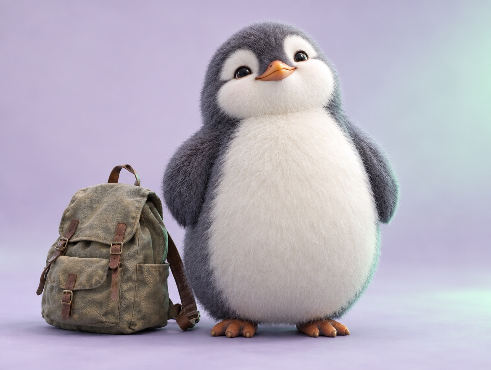

📝 DRAFT · 下書き — まだ本番に出していません · 下書き一覧
🐧 EVERYDAY LIFE⚡ 21 SEC
A slouching back can be a sign that something feels heavy 🎒

Carry Something
When you carry a child on your back, your back gets round.
Cat Back
So a person with a round "cat back" may be carrying something heavy.
The heavy thing is not a bag, but a feeling.
Light Words
When you feel worried, try light words: "It's OK! It's OK!" or "Not real, not real!"
⚡ TRY IT
Spin a light word
The penguin carries 4 heavy thoughts. Spin, say a light word, and 1 thought falls off.
🪨 My shoelace broke. Bad luck?
🪨 Things are too good. Something bad is coming?
🪨 What if… what if…?
🪨 I failed today.
Tap "Spin" to pick a light word 👇
👌 "It's OK! It's OK!"
💭 "I'm thinking too much!"
🫧 "Not real, not real!"
📚 "That was a good lesson!"
😎 "No big deal!"
🍀 "Lucky it was only this much!"
🐕 Dog back! Chest up, and your back feels light.
Dog Back
Then your chest opens, and your "cat back" becomes a "dog back."
📚 I learned this from the Japanese blog "Panda no Ondo".